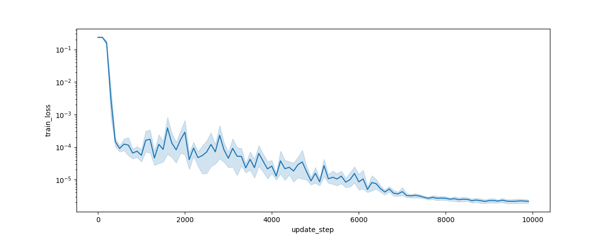
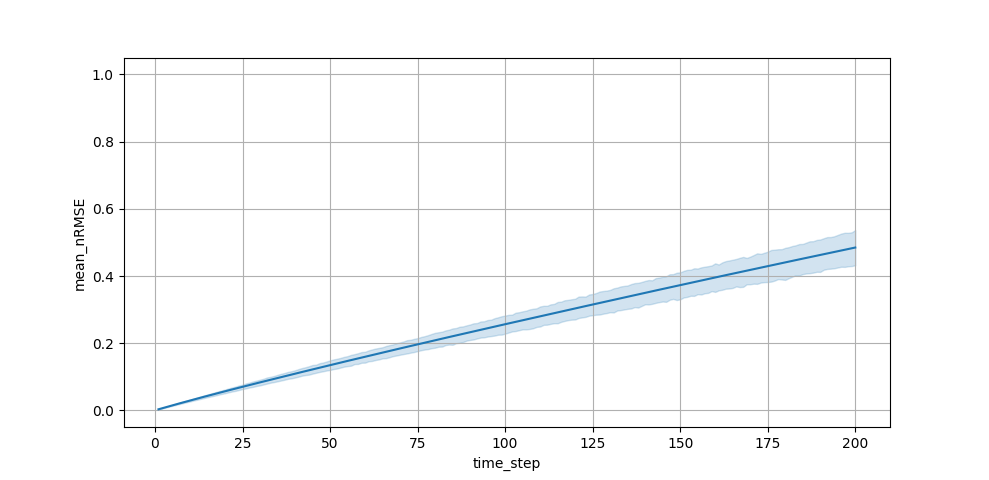
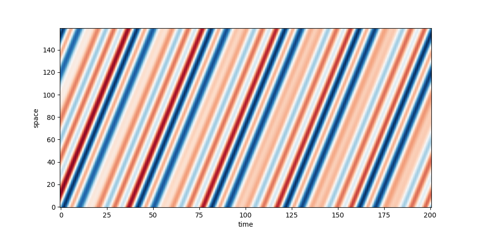
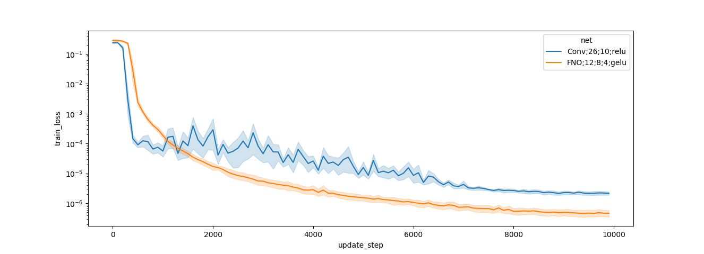
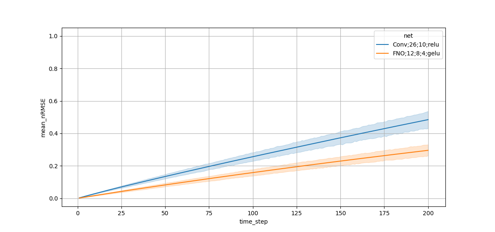

Typical Workflow¤
Workflow for a single training run¤
A BaseScenario consists of all the workflow needed to train autoregressive
neural emulatoAs. To access a pre-built scenario use either the
apebench.normalized.XX for normalized (=dimensionless) scenarios or
apebench.physical.XX for non-normalized scenarios. Also consider using the
difficulty based interface via apebench.difficulty.XX. As an example consider
the scenario with the 1d advection equation.
import apebench
adv_scene = apebench.scenarios.difficulty.Advection()
print(adv_scene)
# Output:
Advection(
num_spatial_dims=1,
num_points=160,
num_channels=1,
ic_config='fourier;5;true;true',
num_warmup_steps=0,
num_train_samples=50,
train_temporal_horizon=50,
train_seed=0,
num_test_samples=30,
test_temporal_horizon=200,
test_seed=773,
optim_config='adam;10_000;warmup_cosine;0.0;1e-3;2_000',
batch_size=20,
num_trjs_returned=1,
record_loss_every=100,
vlim=(-1.0, 1.0),
report_metrics='mean_nRMSE',
callbacks='',
gammas=(0.0, -4.0),
coarse_proportion=0.5,
adv_difficulty=4.0
)
We will discuss all the components later, for now it is just relevant to note that num_spatial_dims=1, telling us that we are in 1d.
A scenario is a collection of recipes that performs the following things for you:
1. Creation of sample trajectories, e.g., for training and validation. Use the
methods get_train_data() and get_test_data() to access them. Or use the
method get_ref_sample_data() to get as many trajectories from the
test dataset as described by the num_trjs_returned attribute.
2. Creation of the autoregressive neural stepper. This comes in two flavors,
get_network(...) produces the Equinox architecture based on a
configuraton string and a JAX random key. The method
get_neural_stepper(...) also needs a task configuration key to embed the
network with a coarse stepper if a correction scenario is requested.
3. Creation of the trainer. A trainer combines a learning methodology
(supervised rollout training etc.) with stochastic minibatching. Use the
method get_trainer(...) together with a train configuration string.
4. All in run of the scenario. This will instantiate a neural stepper, produce a
train dataset, and train the neural stepper for num_training_steps steps.
Afterwards, it performs a model evaluation and returns comprehensive data in
form of a Pandas DataFrame and the trained neural stepper. It also allows to
batch-parallel train multiple seeds at a time. Then, each row in the Pandas
DataFrame corresponds to a single training run.
As an example, let's train a simple feedforward conv-net with 26 hidden channels, 8 hidden layers and the relu activation function. We use a prediction task (so the network shall fully replace the numerical solver) and train with one step supervised deep learning. Let's also use 10 different random seeds. Each seed affects the initialization of the network and the random sampling of minibatches, but does not alter training or test data.
data, trained_nets = adv_scene(
task_config="predict",
network_config="Conv;26;10;relu",
train_config="one",
num_seeds=10,
)
A progress bar will appear. On a modern GPU training should be ~2 min.
The data is still in a raw format which means that each training loss recorded and each metric rollout step recorded have their own column. In the terminology of Pandas this is called a wide format. Precisely, you will find the following columns in the DataFrame:
"scenario": a unique identifier string for the scenario. In our case, we will see"1d_norm_linear_1"telling us we are in 1d, we used a normalized scenario, and the larger category is "linear" (advection is a linear equation with a first order spatial derivative which is indicated by the number 1)."task": Same as we used in calling the scenario."train": Same as we used in calling the scenario."net": Same as we used in calling the scenario."seed": The random seed used for this training run. (This is the one configuration column that actually varies between the rows)"scenario_kwargs": A string containing an empty dictionary, will become relevant later."mean_nRMSE_XXXX": This is a rollout metric recorded after training."train_loss_XXXXXX": Denoting the training loss (associated with the "one" configuation) at update stepXXXXXX. You will see that the XXXXXX are spaced by 100 which is the default logging frequency."aux_XXXXXX": This represents auxiliary data produced by potential callbacks; not relevant for now."sample_rollout_000": A representation of the trajectory with the trained network.
apebench provides utilities to convert this into a long format that is better suited for postprocessing like visualization with seaborn. This requires exactly knowing the name of the columns. Since apebench agrees to a fixed naming convention, we can use one of its wrapped routines.
Let us start by investigating the training loss. For this, we will use the
utility apebench.melt_loss.
data_loss = apebench.melt_loss(data)
This long DataFrame has the same first six configuration columns ("scenario",
"task", "train", "net", "seed", "scenario_kwargs") and two new columns
"update_steps" and "train_loss".
import seaborn as sns
import matplotlib.pyplot as plt
sns.lineplot(data_loss, x="update_step", y="train_loss")
plt.yscale("log"); plt.show()

The training decreased the loss by five orders of magnitude.
Let's investigate the metric rollout
data_metrics = apebench.melt_metrics(data)
sns.lineplot(data_metrics, x="time_step", y="mean_nRMSE")
plt.ylim(-0.05, 1.05); plt.grid(); plt.show()

And we can also plot a sample rollout
import numpy as np
data_sample_rollout = apebench.melt_sample_rollouts(data)
plt.imshow(np.array(data_sample_rollout["sample_rollout"][0])[:, 0, :].T, origin="lower", aspect="auto", vmin=-1, vmax=1, cmap="RdBu_r")
plt.xlabel("time"); plt.ylabel("space"); plt.show()

Running interface¤
Instead of instantiating a scenario and calling it, we can also index it from
the apebench.scenarios.scenario_dict. Most conveniently, this can be done with
the apebench.run_experiment. We can achieve the same result as above by
import apebench
apebench.run_experiment(
scenario="diff_adv",
task="predict",
net="Conv;26;10;relu",
train="one",
start_seed=0,
num_seeds=10,
)
(Smaller variations due to non-determinism of some operations on the GPU can occur.)
Workflow for a study of multiple experiments¤
The above workflow is for a single training run. For apebench, we are interested in comparing multiple architectures, training methodologies, and scenarios. So, we will set up a list of dictionaries describing the configurations. Let's say we wanted to compare the conv net with an FNO. We will configure the Fourier Neural Operator with 12 active modes, 8 hidden channels, and 4 blocks. Then we would write
CONFIGS = [
{
"scenario": "diff_adv",
"task": "predict",
"net": "Conv;26;10;relu",
"train": "one",
"start_seed": 0,
"num_seeds": 10,
},
{
"scenario": "diff_adv",
"task": "predict",
"net": "FNO;12;8;4;gelu",
"train": "one",
"start_seed": 0,
"num_seeds": 10,
},
]
Notice, that only the net key has changed. So we can use a list comprehension
to create the CONFIGS list:
CONFIGS = [
{
"scenario": "diff_adv",
"task": "predict",
"net": net,
"train": "one",
"start_seed": 0,
"num_seeds": 10,
}
for net in ["Conv;26;10;relu", "FNO;12;8;4;gelu"]
]
We will use the apebench.run_study_convenience to run the entire study.
This function returns the the melted data for metrics, loss, and sample rollouts
(in this order) and a list of paths where the network weights are stored.
(
metric_df,
loss_df,
sample_rollout_df,
network_weights_list,
) = apebench.run_study_convenience(
CONFIGS, do_loss=True, do_metrics=True, do_sample_rollouts=True
)
Runtime for this study should be around 4 minutes on a modern GPU. (If you ran the study a second time, it will load the results from disk.)
Let's produce plots. First for the loss history
import seaborn as sns
import matplotlib.pyplot as plt
sns.lineplot(loss_df, x="update_step", y="train_loss", hue="net")
plt.yscale("log"); plt.show()

Then for the metric rollout
sns.lineplot(metric_df, x="time_step", y="mean_nRMSE", hue="net")
plt.ylim(-0.05, 1.05); plt.grid(); plt.show()

We can also make a tabular export (using the median over the 10 seeds)
print(metric_df.groupby(
["net", "time_step"]
)[["mean_nRMSE"]].median().reset_index().pivot(
index="time_step",
columns="net"
).query(
"time_step in [1, 2, 3, 4, 5, 10, 20, 50, 100, 200]"
).round(3).to_markdown())
| time_step | ('mean_nRMSE', 'Conv;26;10;relu') | ('mean_nRMSE', 'FNO;12;8;4;gelu') |
|---|---|---|
| 1 | 0.003 | 0.002 |
| 2 | 0.006 | 0.004 |
| 3 | 0.01 | 0.005 |
| 4 | 0.013 | 0.007 |
| 5 | 0.016 | 0.009 |
| 10 | 0.031 | 0.017 |
| 20 | 0.059 | 0.033 |
| 50 | 0.141 | 0.08 |
| 100 | 0.27 | 0.155 |
| 200 | 0.507 | 0.287 |